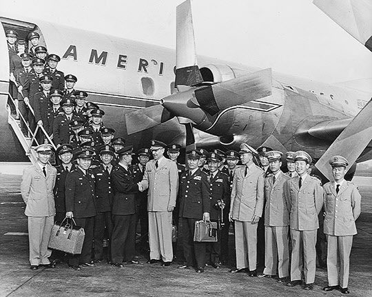
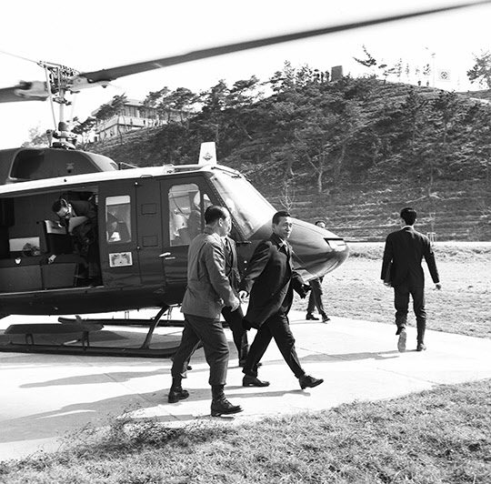

연재일 2014-08-18출처 조선일보 프리미엄조선 연재
“광주로 같이 가자. 참모장을 맡아줘.”
대취에서 깨어난 박정희의 제안에 담긴 의미를 박태준은 금세 알아차렸다. 최소한 두 가지였다. 하나는 자신을 깊이 신뢰하고 있다는 것, 또 하나는 좌천당한 울분과 과음의 후유증 속에서도 가슴속의 웅지를 잘 간직하고 있다는 것.
“회는 없어도 술이야 많지 않겠습니까?”
박정희가 미소를 지었다. 박태준도 미소를 지었다.
사령관 집무실을 나서는 박태준은 어느덧 자기 운명의 나침반을 고정시키고 있었다. 그것은 박정희의 길을 끝까지 함께 가겠다는 다짐과 의지였다. 거사의 꿈, 거대한 웅지를 품었으나 성공의 길은 요원해 보이는 상관. 어쩌면 머잖아 숙청을 당하거나 예편을 당할 수 있는 상관. 그렇게 되는 경우엔 자신의 앞길에 걸림돌이나 될 수밖에 없는 상관. 그러나 박태준은 그 꿈과 그 웅지를 알처럼 품고 부화의 길을 함께 모색하는 쪽으로 주사위를 던진 사람이었다.
박태준이 박정희의 제안을 거절한 적도 있었다. 25사단에서 참모장, 연대장을 지내는 박태준에게 1군 참모장 박정희가 “함께 일하자”며 본부사령직을 제안했다가 “그건 밥장사 아닙니까?”라는 퇴짜를 맞았던 것이다. 그때 박정희는 ‘거절한 박태준’이 더 믿음직스러웠다. 딸랑딸랑 하는 짓은 싫다. 그 기개가 좋았던 것이다.
박정희와 박태준의 광주 동행. 서로가 강하게 원하는 그 길을 육군의 더 높은 상부가 막아섰다. 장도영 2군 사령관이 박정희에게 지금 광주 1관구 사령부의 참모장은 자기가 거기로 보낸 지 얼마 되지 않으니 계속 써달라고 부탁한 것이었다. 박정희에게 부탁하는 장도영도 고려한 점이겠지만, 당시 군은 한 자리에서 최소 여섯 달을 못 채우면 장교 인사고과에 반영하지 않았다. 해당 장교에게는 ‘경력 낭비’였다.
박정희가 부산을 떠나고 일주일쯤 지나서 박태준은 편지 한 통을 받았다. 인편으로 온 박정희의 육필은 이런 내용도 담고 있었다.
<자네에게 미안한 마음이 크네. 자네마저 6개월을 못 채우고 부산을 떠나게 된다면 경력에도 포함되지 않을 테니 자네를 부른 내 마음은 괴롭다네. 자네의 다음 보직을 걱정하면서도 그걸 도울 수 없는 내 입장을 이해해주게.>
즉시 박태준은 만년필을 잡았다. 거침없는 필치의 답신은 다음과 같은 당당한 목소리도 담고 있었다.
<대한민국 육군에서 저와 같은 경력의 소유자가 몇 명이나 있겠습니까? 저도 어디론가 쫓겨나겠지만 좋은 데로 가게 될 테니 아무 걱정 마십시오.>
박정희에게 보낸 박태준의 큰소리가 허장성세는 아님을 증명하듯, 1960년 8월 하순에 그는 ‘미국 육군부관학교’로 연수 가겠느냐는 제안을 받는다. ‘한국군 안에서 자라나고 있었던 새로운 엘리트 집단을 대표’하는 박태준이었다. 그는 수락하고 싶었다. 일 년 전의 미국 연수에서 받았던 신선한 충격을 새로이 체험하고 싶었다. 그러나 혼자서 결정할 일이 아니었다.
박태준 등 한국군의 미국 연수단이 현지공항에 내린 모습.
박태준은 광주부터 다녀오기로 했다. 가장 빠른 교통수단은 열차였다. 부산에서 경부선으로 대전까지 올라가 대전에서 호남선으로 갈아타고 광주로 내려갔다. 박태준의 보고를 들은 박정희는 먼저 손가락으로 육갑을 짚듯 찬찬히 셈부터 했다.
“내년 1월에 돌아온다고 했나?”
“예.”
“그럼 됐어.”
“다녀와도 되겠습니까?”
“그래, 넉넉해. 나도 5년 전에 미군 포병학교 고급반에 가서 공부했는데, 양놈들한테 배울 게 많아.”
“알겠습니다.”
박태준이 일어섰다.
“자네의 시간 없는 사정을 내가 맨입에 보내는 핑계로 삼는구먼.”
“아닙니다.”
“가서 잘 보고, 잘 배워. 나중에 다 나라를 위해 쓰일 날이 올 거야.”
박태준의 거수경례를 박정희가 거수경례로 받았다. 그것만으로는 뭔가 허전하여 굳센 악수도 나누었다.
1960년 9월, 박태준은 아내와 어린 딸들을 서울에 두고 장도에 올랐다. 가난한 나라의 젊은 대령은 두 번째로 미국에 발을 디딘 기념으로 꼬박 하루를 바쳐 샌프란시스코를 돌아보았다. 금문교를 자랑하는 도시는 그의 가슴에 쓰라린 한 문장의 희원으로 남았다.
‘우리는 언제쯤에나 이런 문명사회를 건설할 수 있을까…….’
샌프란시스코에서 고급열차에 올라 육군부관학교가 있는 인디애나폴리스로 가는 사흘 여정 내내 박태준은 우울한 기분을 떨칠 수 없었다. 광활한 미국의 ‘문명’이 조국의 ‘초가집’을 짓누르는 거대한 바위처럼 보였다.
강대한 부자 나라의 육군부관학교에서 박태준은 최신 행정이론과 관리제도를 중점적으로 배웠다. 오퍼레이션 리서치(Operation Research), 군사물자의 효율적 배치와 관리에 필요한 공정관리기법(PERT)과 선형계획법(LP)……. 뒷날에 경영자로 나서는 그에게 보탬이 된, 한국군 장교로선 처음 공부하는 과정이었다.
1971년 3월 헬기로 포철 건설현장을 방문하는 박정희 대통령을 박태준 사장이 맞고 있다.
박태준이 미국에서 열심히 선진문물을 습득하는 동안, 박정희는 광주에서 ‘거의 잠깐’이라 부를 만하게 근무하고 육군본부 작전참모부장으로 옮겨가 있었다. 1960년 10월과 11월, 그의 심기는 불편하고 불안했다. 김종필 중령이 주동한 이른바 ‘하극상 16인’의 배후 조종자로 지목된 것이었다. 매그루더 주한 미군 사령관이 장면 정부의 권중돈 국방장관과 최경록 참모총장에게 박정희를 예편시키라는 압력을 넣었다.
박정희는 초조했다. 군법회의에 회부된 김종필 등 ‘박정희의 사람들’이 불원간 군복을 벗게 될 상황에서 자신에게도 일대 위기가 닥쳐오는 것을 감지할 수 있었다.
박정희는 구명운동에 나서기로 했다. 낭떠러지 앞에서 그가 간신히 붙잡은 줄은 국회 국방위원장 이철승이었다. 썩은 줄은 아닐 것이었다. 당시 정치권력 지형도에서 다행히 이철승은 장면에게 말발이 세게 먹히는 국회의원이었다.

